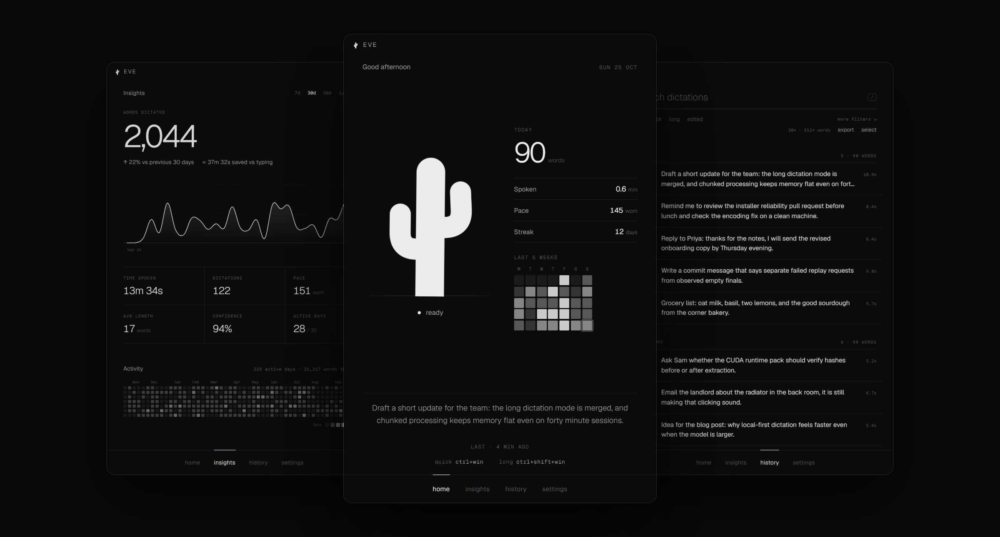
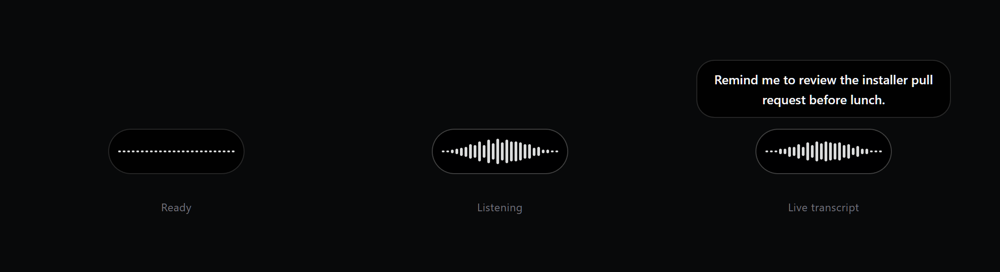
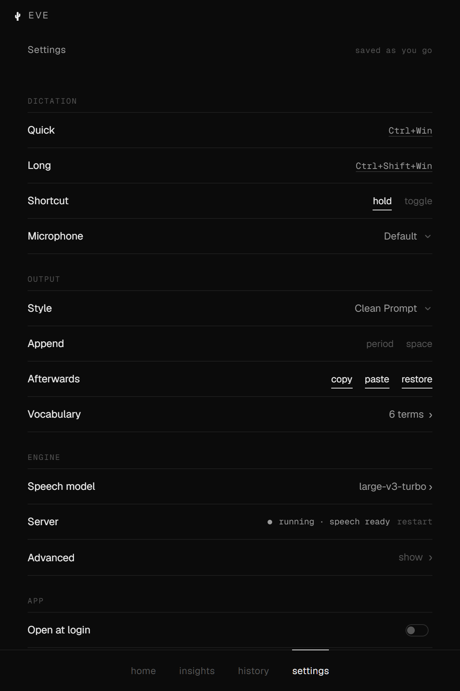

long dictation
Talk for as long as you need.
Long recordings spool to a temporary file and are transcribed in chunks, so memory stays flat. The audio is deleted when the session ends.
local dictation for windows · v0.8.2-alpha.8
Hold a hotkey, say what you mean, and the words land wherever you were typing. Speech recognition runs on your own machine, with no account and no cloud.
Free and open source · Windows x64 · alpha

01 · the pill
A small pill rises from the bottom of the screen while you talk, shows the words as they arrive, and slips away once the text is pasted. No window to switch to.
CtrlWin quick CtrlShiftWin long

long dictation
Long recordings spool to a temporary file and are transcribed in chunks, so memory stays flat. The audio is deleted when the session ends.
output
Eve copies, pastes into the active window, and can put your previous clipboard back afterwards.
styles
Keep exactly what you said, or use Clean Prompt, Codex Prompt, Message Rewrite, or Command Mode for local, rule-based cleanup.
vocabulary
Hotwords help Eve spell names, acronyms, and product terms the way you do.
models
large-v3-turbo by default, large-v3 for maximum accuracy, or small for lighter hardware. Switching never interrupts the current model.
hardware
Works out of the box on the CPU. An optional NVIDIA CUDA pack, verified by hash, speeds things up on supported GPUs.
02 · the app

home
Words dictated, speaking pace, your streak, and the last thing you said, with your hotkeys always in view.

insights
Words over time, time saved compared with typing, and a full year of activity. Calculated locally from your History.

history
Search every dictation, filter by quick, long, or edited, and export to JSON or CSV whenever you like.

settings
Hotkeys, microphone, output style, vocabulary, and speech model, all on one page with nothing to apply.
03 · privacy
04 · install
Eve.Web.Setup.exe from GitHub Releases.